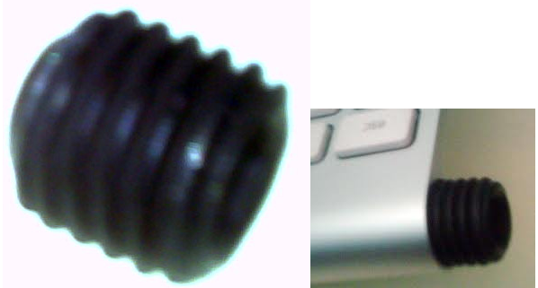
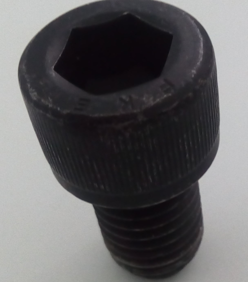
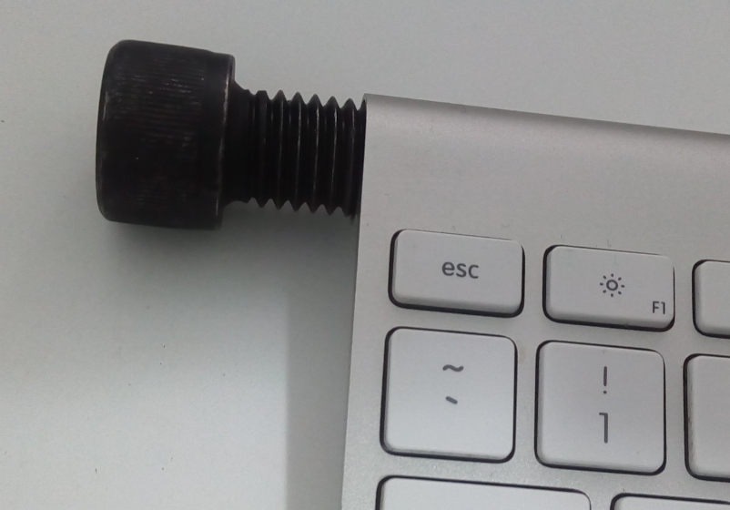
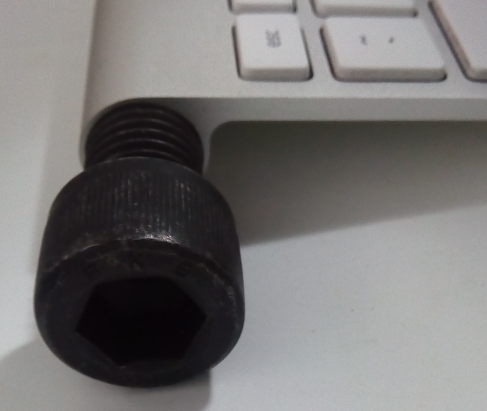
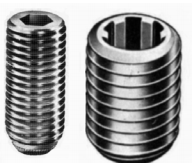

Perdeu a Tampa Do Seu Teclado Apple?

Iiii.. perdeu a tampa do seu teclado Apple, seu Magic Keyboard, (ou qualquer outro nome carinhoso que você tenha por ele aqui)? Não se desespere, seus problemas acabaram!
A minha triste história começa ao descobrir que meus queridos gatos se aproveitaram do momento em que parei para trocar as pilhas do teclado e surrupiaram a tampa que fecha o mesmo.
Sem a tal peça como fazer? Dá para ver que algo tem que segurar as pilhas e ao mesmo tempo fechar o circuito. Mas o quê pode cumprir esse papel?
O que não vai dar certo
Você pode descartar de cara:
- Colocar uma moeda com durex
- Ficar segurando com o dedo e digitando com a outra mão
Sim, isso foi uma piada e agora com as brincadeiras cessadas, vamos para a verdade.
Primeiras pesquisas
As primeiras buscas recaem sobre uma nova peça. A mesma, o Mercado Livre nos oferece por atuais R$80 (Oitenta reais) no momento em que escrevo esse texto. Vários vendedores, o mesmo valor.
Buscando pela peça no EBay e sites similares, temos a peça por cerca de $7 (Sete dólares), deixando na sua cabeça apenas a dúvida de quanto tempo vai levar para chegar na sua casa, e, se chegar.
Buscas mais profundas
Um leque se abre quando você se acalma, aceita a besteira e começa a pesquisar mais alternativas.
Vi pessoas com soluções de peças como as abaixo: 
Você pode consultar um material de construções mais próximo em busca de algo similar as imagens acima. Há peças de chuveiro, porcas e outras opções. Apenas tenha em mente que o que segura as pilhas terá de fechar o circuito, conduzir energia.
Minha solução
Nos posts que encontrei (Discussão 1, Discusão 2) muito se fala de uma medida de 5/8" (cinco oitavos). Com isso anotado sai a caça de um pafuso nessa medida, e para minha surpresa deu extremamente certo.
Encontrei um parafuso de aço, como o abaixo. A rosca dele encaixa certinho no teclado:

Aqui o resultado:
 
Você fica com um teclado funcionando por uma peça de no máximo R$2 (Dois reais), com um design arrojado a lá Frankenstein. No pior dos resultados, você pode usar essa solução enquanto sua peça está vindo de um EBay, Alibaba e etc.
O vendedor me deu a dica que para melhorar o resultado eu poderia procurar por um parafuso mosca ou um allen sem cabeça em uma loja mais especializada de parafusos. Como os da imagem abaixo:

Final Feliz
Após me verem felizes com o resultado de economia e funcionamento do teclado, meus gatos devolveram a peça original em troca de uma lata de atum.
Espero que esse post ajude outras pessoas com gatos psicopatas ou que simplesmente perderam essa tampa em uma mudança ou qualquer outro descuido.
Grande Abraço!